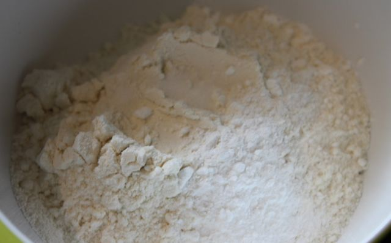

menu
geschiedenis
Recept en Ingredienten
Dit recept is bedoeld voor 25 personen.
Maar u kan dit nog altijd verkleinen of vergroten door de aantallen van de benodigheden te veranderen.
Dit recept duurt 10 tot 20 minuten.
Voedingswaarde per koekje per 100 gram:

Energie (kcal) 48
Vet 28
Verzadigd 14 g
Meervoudig onverzadigd 4,5 g
Enkelvoudig onverzadigd 8 g
Cholesterol 70 mg
Natrium 341 mg
Kalium 221 mg
Koolhydraten 58 g
Eiwitten 6 g
Vitamine A 594
IU Ascorbinezuur 0,2 mg
Calcium 38 mg
IJzer 2,5 mg
Vitamine D 0%
Vitamine B6 0,1 mg
Vitamine B12 0,1 µg
Magnesium 55 mg
dit is wat je allemaal nodig hebt:
550 gram bloem
1 theelepel zout
1 theelepel bakpoeder
1 theelepel vanille-extract
180 gram kristalsuiker
180 gram donkere basterdsuiker
350 gram pure chocolade
2 eieren
250 gram boter (kamertemperatuur)
bakpapier en natuurlijk een oven.
voorbereiding:
Hak de chocolade repen in kleine stukjes.

 Meng de bloem, bakpoeder en het zout in een kom.
Meng de bloem, bakpoeder en het zout in een kom.
Warm de oven op 190 graden celcius voor 10 minuten.
Bereidingswijze:
Doe de boter, basterdsuiker, kristalsuiker en het vanille-extract in een kom en mix tot deze romig is.
Voeg daarna 1 voor 1 de eieren toe en mix na elk ei het mengsel goed door.
voeg beetje bij beetje het bloemenmengsel toe.voeg als laatste de chocoladestukjes toe.
vorm met 2 lepels platte koekjes op het bakpapier(op een rooster of bakplaat).
laat wel ruimte tussen de koekjes, want ze groeien een beetje tijdens het bakken.
bak ze in 8-10 minuten in een oven op 190 graden.
als ze klaar zijn voelen ze zacht, maar geen zorgen want ze verharden tijdens het afkoelen.
Tip: verleng de baktijd niet, behalve als je grote koekjes hebt.
Tips:
Gebruik goede kwaliteit gezoute zoete boter.
Gebruik twee verschillende soorten chocolade.
Bak in kleinere baksels.